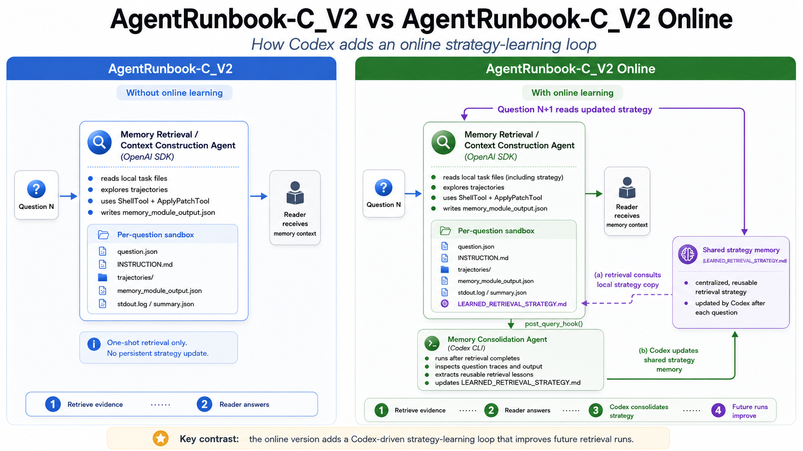

We introduce AgentRunbook-C V2, a faster and smarter memory controller, especially in low-reasoning regimes.
- At medium reasoning with GPT-5.4-mini, AgentRunbook-C V2 improves accuracy by 1.76 percentage points (2.5% relative) over AgentRunbook-C while being 33.8% faster.
- Compared with off-the-shelf Codex at the same setting, AgentRunbook-C V2 is 5.56 points (8.4% relative) more accurate while being 64.4% faster.
Codex, AgentRunbook-C, and AgentRunbook-C V2
LME-V2-Small · GPT-5.4-mini · online memory-query latency. Hover, focus, or tap a point for exact values.
01 / Lightweight harness
A simpler memory controller harness
AgentRunbook-C delivered a large latency improvement over a vanilla, off-the-shelf Codex setup. As model capabilities improved, we began questioning how much orchestration these retrieval tasks actually required. As memory controller agents are dominated by file search and file reading, we test a much leaner design built around only two core tools: a shell tool for search and execution, and a file editor for persistent updates.
The result is AgentRunbook-C V2, implemented with the OpenAI Agents SDK. Its purpose-built execution layer preserves the active file search and state inspection that make AgentRunbook-C effective, while substantially reducing latency at the low and medium reasoning settings. We evaluated the lightweight harness with the latest efficient model, GPT-5.6 Luna. Because Luna's low- and medium-effort latencies are similar for V1 and V2, Figure 02 omits the low-effort points.
- At medium reasoning, V2 reaches 66.52% accuracy at 24.72 seconds, compared with 68.29% at 62.71 seconds for V1 and 64.97% at 98.88 seconds for off-the-shelf Codex.
- At xhigh reasoning, V2 reaches 75.17% accuracy at 48.94 seconds, compared with 73.61% at 101.83 seconds for V1 and 73.39% at 155.51 seconds for off-the-shelf Codex.
LME-V2 Small Performance (GPT-5.6 Luna)
LME-V2-Small · GPT-5.6 Luna · medium and xhigh reasoning only · online memory-query latency. Hover, focus, or tap a point for exact values.
02 / Test-time learning
Learning from retrieval experience
Simplifying the harness exposed another source of inefficiency: although many questions followed similar retrieval patterns, the agent still approached each one from scratch. Trace analysis showed that experience could often transfer across questions: successful search strategies, useful file paths, and previously exhausted directions were all reusable.
To preserve and transfer useful retrieval experience, we introduced a memory consolidation agent powered by Codex. After each question, it extracts reusable retrieval experience and updates a persistent strategy note, which becomes part of the query-time sandbox. This creates a lightweight form of test-time online learning: the system improves through accumulated experience without access to labels.
System Illustration

03 / Combined system
Putting it together
OpenAI Agents SDK + online learning = AgentRunbook-C V2.
The lightweight harness reduces orchestration overhead, while the consolidation agent carries useful retrieval strategies forward to later questions. Together, V2 is substantially faster at low and medium reasoning and reaches the highest accuracy at medium and xhigh.
| System | Low | Medium | Xhigh | |||
|---|---|---|---|---|---|---|
| Accuracy | Latency | Accuracy | Latency | Accuracy | Latency | |
| Codex | 47.30% | 95.00s | 66.50% | 130.00s | 69.90% | 177.20s |
| V1 | 66.00% | 62.00s | 70.30% | 70.00s | 74.90% | 108.30s |
| V2 | 65.41% | 26.11s | 72.73% | 56.68s | 75.61% | 130.54s |
04 / Epilogue
Explore the implementation
AgentRunbook-C V2 is open source. The lightweight controller and its online-learning loop are available as separate, reusable implementations.
-
Main V2 implementation
memory_modules/agentrunbook_c_v2.py -
Online-learning implementation
memory_modules/agentrunbook_online_learning.py
Feel free to check out the implementation, contribute your own memory systems, and submit them to the LongMemEval-V2 leaderboard!